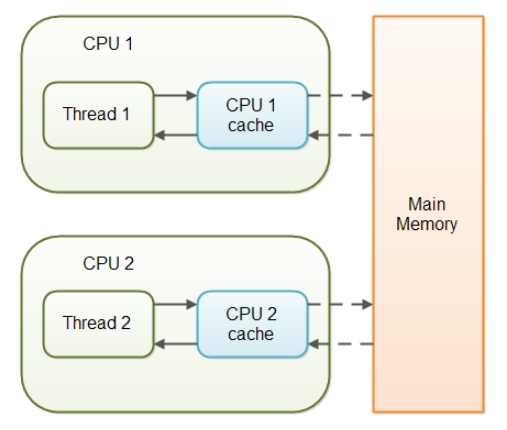

Java, volatile과 synchronized 간단 정리
2022-03-10
자바 멀티 스레드 환경에서 발생하는 문제
- 여러 스레드(혹은 사용자?)에서 공유 중인 가변 데이터를 갱신하는 경우 동기화가 되지 않는 문제가 발생할 수 있습니다.
volatile
- volatile은 CPU cache가 아닌 Main Memory에 대한 read, write를 보장하는 키워드로, 모든 스레드 간의 변수에 대한 가시성 문제를 해결하여 모든 스레드가 동일 시점에 동일한 값을 가지도록 동기화하는 역할을 합니다.

- volatile은 원자적 연산에서 해당 데이터의 동기화를 보장합니다.
- 비원자적 연산에서는 volatile 키워드만으로는 완벽하게 동기화를 보장할 수 없기 때문에 아래의 synchronized 키워드를 사용해야 합니다.
synchronized
- synchronized는 해당 메서드나 블록을 한번에 한 스레드씩 수행하도록 보장하는 키워드입니다.
- 즉, 하나의 스레드가 lock을 얻게 되면 수행이 끝나서 lock이 풀릴때까지 다른 스레드들은 대기하게 됩니다.
- synchronized는 하나의 스레드만 진입하도록 하는 배타적 실행 동기화뿐만 아니라 가장 최근의 값(메인 메모리에서)을 가져오는 통신 동기화 기능도 같이 수행합니다.
마무리
- volatile(통신 동기화)만으로 동기화가 되는 상황이라면 synchonized보다는 volatile만으로 동기화 처리를 하는 것이 낫습니다. 왜냐하면 배타적 실행을 위해 락을 획득하고 반환하는 비용이 발생하지 않기 때문입니다.
- 만약 배타적 실행 제어가 필요하다면 synchonized를 사용해야 합니다.
출처